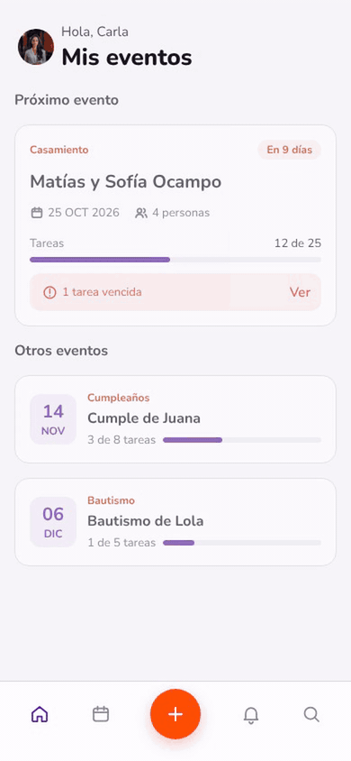
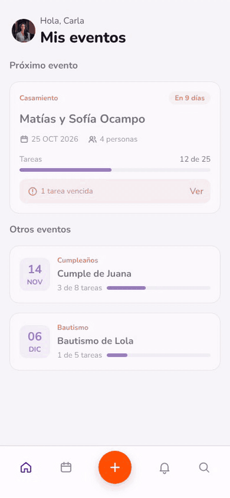
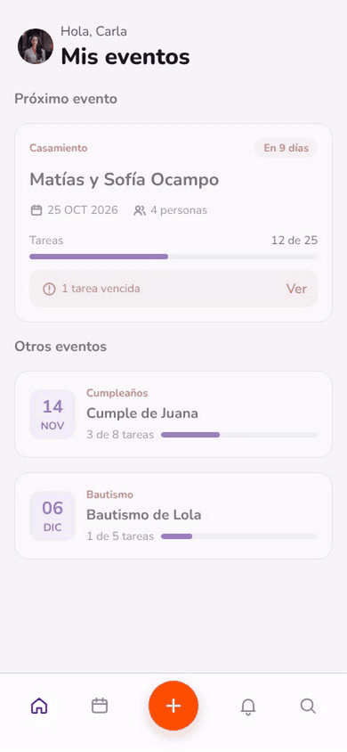
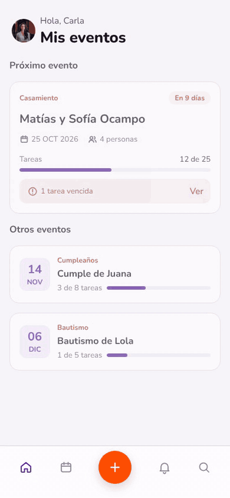
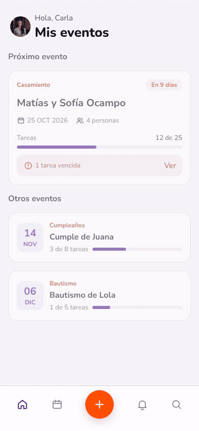
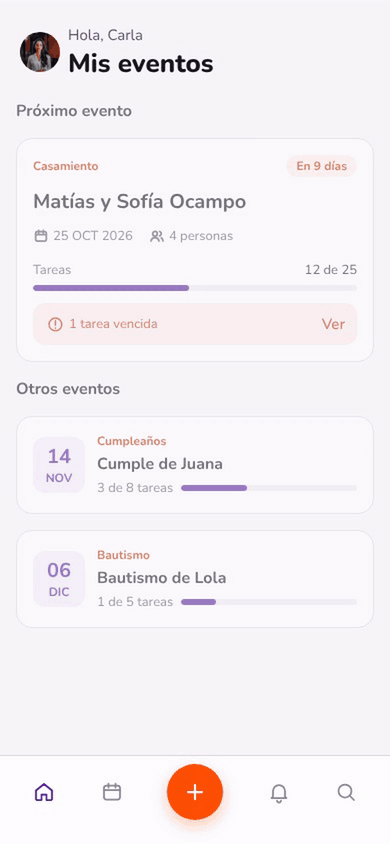
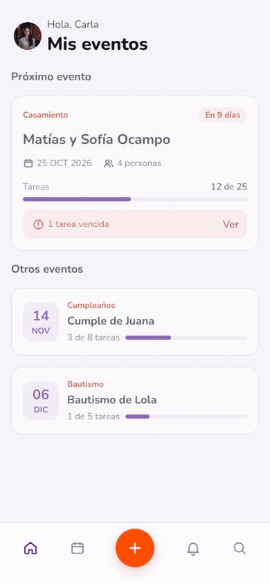
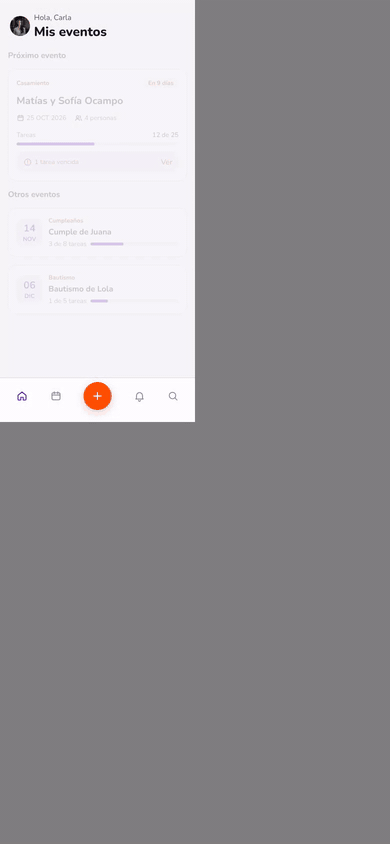

Deslizar una tarea revela Eliminar; el Snackbar con cuenta regresiva de 5 s permite deshacer.
GIF · MP4Sin deshacer: a los 5 s el Snackbar se va y recién ahí sale el aviso al responsable.
GIF · MP4Drawer con resumen: Cancelar es la acción principal; Eliminar evento en rojo contorno. Vuelve al Home y entra el Snackbar.
GIF · MP4Editar desde el ⋮ de la tarjeta: Guardar se habilita al cambiar algo; el Alert avisa a quién le llega el aviso.
GIF · MP4
Editar evento: al cambiar la fecha aparece «Mover tareas también»; Guardar actualiza el evento y sus tareas.
GIF · MP4
Crear tarea desde el +: evento elegido en una hoja, responsable opcional y el Alert de «sin responsable».
GIF · MP4
Crear evento en 2 pasos: datos del evento y colaboradores con buscador que filtra en vivo.
GIF · MP4
Evento creado sin colaboradores: estado vacío en Equipo y alta desde Agregar colaboradores.
GIF · MP4
Martín cambia el estado de una tarea desde su teléfono: contador en la campana y el item nuevo en Notificaciones.
GIF · MP4
Carla edita «Definir DJ»; a los 6 s Martín guarda su cambio y aparece el aviso de conflicto.
GIF · MP4Lista agrupada: Vencidas en rojo, Dom 25 OCT y los días siguientes con contadores; filtros por estado.
GIF · MP4
Calendario con las tareas sin terminar y Buscar con resultados agrupados.
GIF · MP4